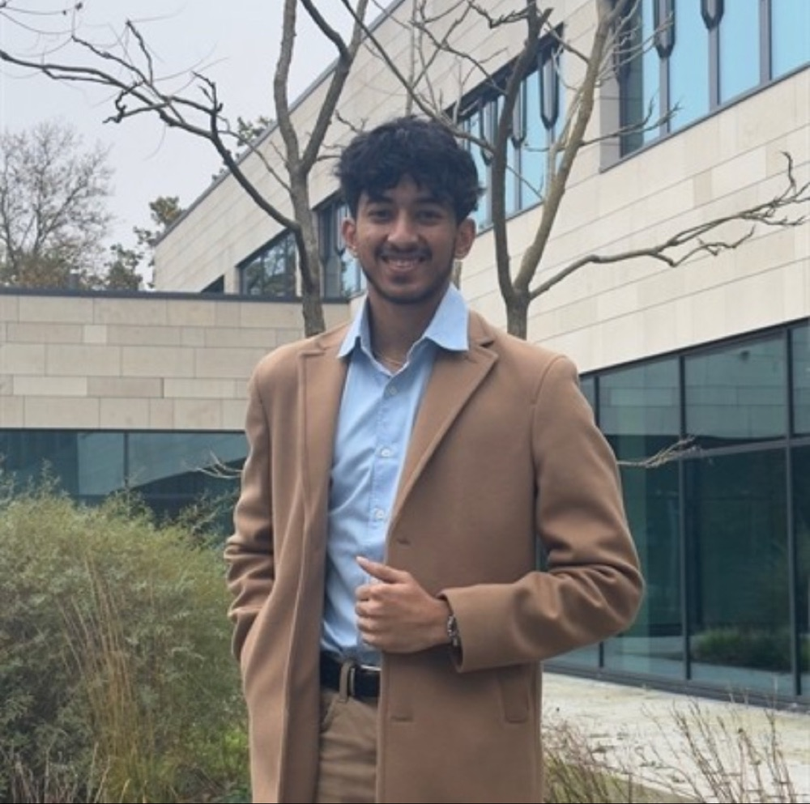

I'm Aditya Srivatsa
I'm in my 7th semester of a Bachelor's in Robotics at THWS (Technische Hochschule Würzburg-Schweinfurt). I build machine-learning and computer-vision systems that run on real hardware.

ML for machines that move
I like problems where software meets the physical world: a camera watching a warehouse floor, an ultrasonic sensor on a car bumper, the CAN bus inside an elevator. Most of my work applies machine learning and data to electromechanical systems, and I've used ROS2 hands-on.
At OTIS Lead Design Center in Berlin I led an ML pipeline that reads CAN-bus traces and finds the root cause of elevator faults. It was the first time the team had tried this approach. It reached 96% diagnostic accuracy and uses SHAP so engineers can see why the model made each call.
Outside the lab I'm an active member of Werkraum, the THWS start-up community. I pitched my collision-warning retrofit there at Campus Startup Night 2024.